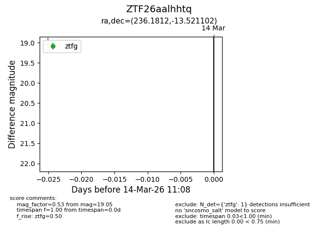
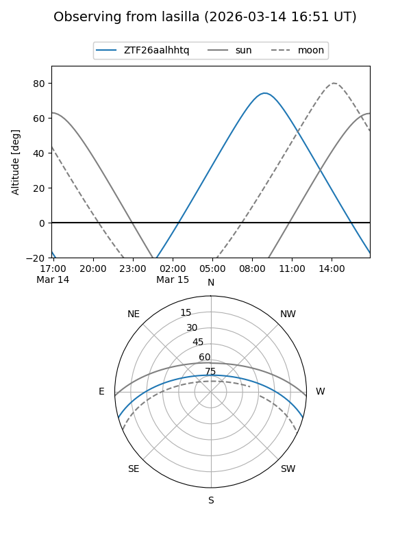
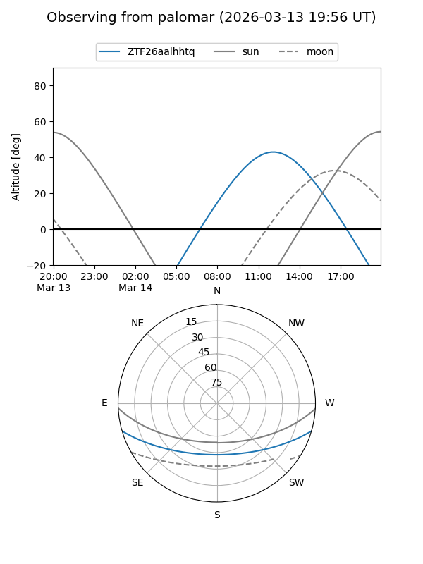

ZTF26aalhhtq
Target ZTF26aalhhtq at 2026-03-14 11:10
Aliases and brokers:
FINK: link
Lasair: link
ALeRCE: link
alt names
ZTF26aalhhtq (ztf,fink_ztf)
Coordinates:
equatorial (ra, dec) = 236.1812,-13.52110
equatorial (HMS+DMS) = 15:44:43.49,-13:31:15.97
galactic (l, b) = (354.4317,+31.52842)
Flags:
Photometry:
last ztfg=19.05
1 ztfg detections
Lightcurve

Visibility


Additional plots